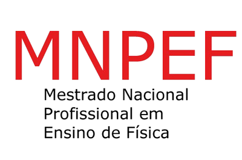
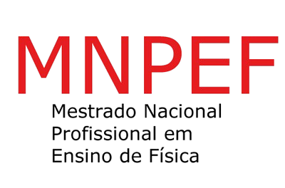
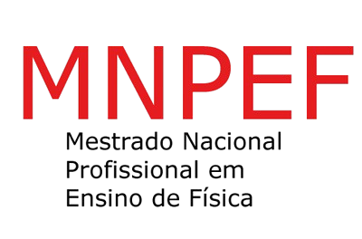
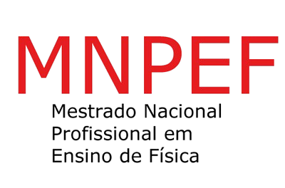

Estudos relacionados ao efeito estufa
| Tempo (s) | Temperatura Ambiente (ºC) | Temperatura Estufa (ºC) |
A temperatura ambiente é a temperatura do ar em um ambiente natural, seja dentro de um espaço fechado, como uma casa ou escritório, ou ao ar livre. Ela reflete as condições climáticas do local e varia de acordo com fatores como a época do ano, a hora do dia, a altitude, a presença de vento e a umidade do ar. Em geral, a temperatura ambiente não é controlada artificialmente, o que a torna suscetível a mudanças naturais do tempo. No caso do experimento, a temperatura ambiente é medida por um sensor que não tem interferência de estufa ou proteção em volta, apenas tendo contato com a temperatura ambiente.
A temperatura de estufa é controlada dentro de uma estrutura fechada chamada estufa, projetada principalmente para criar condições ideais para o cultivo de plantas. Nesse ambiente, a temperatura é regulada de acordo com as necessidades específicas das plantas, geralmente sendo mantida em níveis mais altos que a temperatura ambiente. As estufas retêm o calor da luz solar, impedindo que ele escape, o que resulta em um ambiente mais quente. No experimento, a temperatura estufa é medida por um sensor igual ao outro, porém em consições diferentes, tendo em volta uma estufa de vidro para assim ter outros resultados.